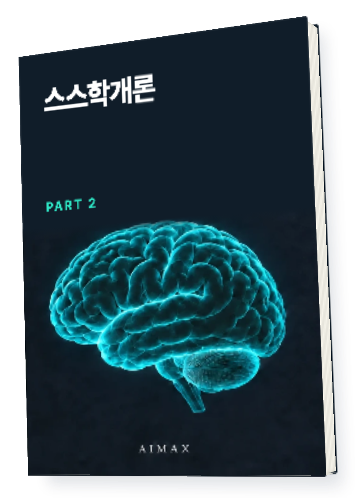
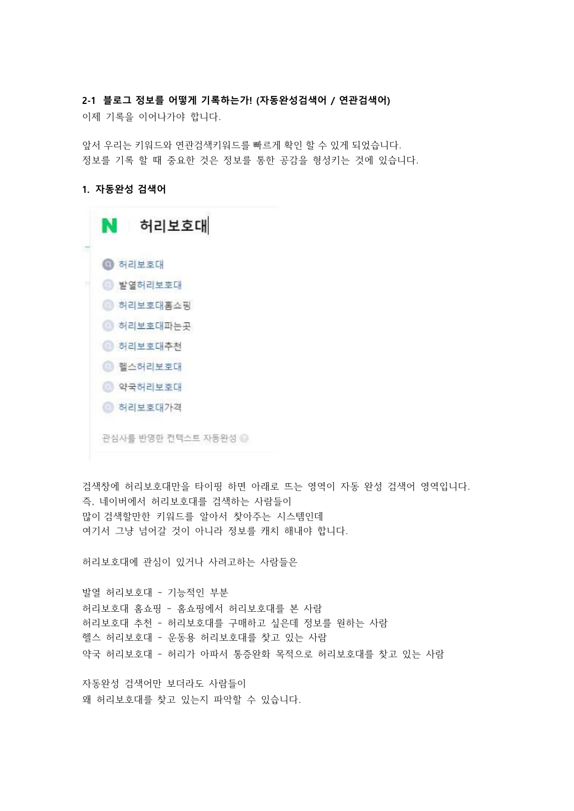
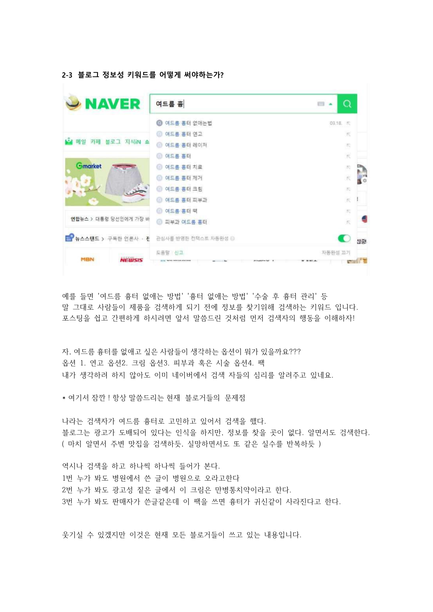

이 블로그 방법으로50억 벌었습니다
내 상품을 찾는 사람을 모으는 법

정보성 키워드와 구매성 키워드.
사람들이 검색하는 이유를 읽고
내 블로그에서 만날 고객을 정해보세요.
직접 판매해 온 경험을
한 권의 설계 기준으로
메이크프렌즈 누적 매출
2021.01 — 2024.04
(주)메이크프렌즈 전체 매출 · 월별 원장 40개월 합산
각 막대는 2021년 1월부터 해당 시점까지의 누적액
이 책이 필요한 순간
글은 계속 쓰는데
내 고객은 어디에 있을까요?
무슨 글을 쓸지 정하기 전에, 누구를 모을지부터 생각해보세요. 이 책은 블로그에 정보를 쌓고 잠재 고객과 관계를 만드는 방법을 다룹니다.
책 속에서 먼저 확인하세요
검색어 하나에도
사람의 목적이 담겨 있습니다
원문에는 자동완성 검색어를 살펴보는 과정과 정보성 키워드를 풀어 쓰는 예시가 들어 있습니다.


제공된 원문에서 가져온 본문 자료입니다.
이 책에서 다루는 것
키워드부터 고객을 모으는 운영까지
키워드의 역할
정보를 찾는 검색과 구매하려는 검색을 구분합니다.
블로그 글의 방향
제품 설명에 앞서 독자의 상황과 고민을 짚습니다.
사람을 모으는 운영
블로그에 쌓은 글과 이웃 관계를 판매 활동에 연결합니다.
채널을 잇는 관점
검색 노출과 관계 형성을 함께 보는 운영 방향을 다룹니다.
내 일에 적용하기
내 상품에 맞는
글의 출발점을 잡아보세요
고객 상황
제품이 필요한 순간을 적습니다.
검색어
고객이 그 순간 검색할 말을 고릅니다.
글의 방향
제품을 소개하기 전 풀어줄 고민을 정합니다.
내 상품은 [상품]이고 고객은 [고객]입니다. 첨부한 책을 참고해 정보성 키워드와 구매성 키워드를 나눠주세요. 각 키워드로 쓸 글의 방향도 제안해주세요.
활용 예시입니다. AI의 답은 원문과 내 상황에 맞는지 확인하세요.읽고 보관하고 다시 꺼내 쓰세요
전자책과 지식 파일을
함께 받습니다
편하게 읽는 전자책
컴퓨터와 모바일에서
본문을 읽는 파일입니다.
내 자료로 쓰는 지식 파일
압축을 풀어 Obsidian에서 열거나
AI에 참고 자료로 넣어보세요.
지식 파일은 Obsidian/AI용 자료입니다.
AI가 자동 실행되거나 내용을 영구 학습하는 프로그램은 아닙니다.
결제 후 이렇게 받으세요
구매 이메일로 온 메일에서
자료 받기를 누르세요.
로그인 없이 14일 동안,
파일당 3회 다운로드할 수 있습니다.
다시 받을 때는 같은 구매 이메일로
라운지에서 재다운로드하세요.
이런 분께 권합니다
- 판매할 상품은 있는데 블로그 글의 방향이 막막한 분
- 정보성 글과 판매글을 어떻게 연결할지 고민하는 분
종이책이 배송되나요?
종이책 배송 없이 PDF와 지식 파일 ZIP을 받는 디지털 상품입니다.
AI나 Obsidian을 꼭 써야 하나요?
PDF만 읽어도 됩니다. 지식 파일은 책을 보관하거나 AI에 참고 자료로 넣고 싶을 때 활용하세요.
구매하면 같은 성과를 얻나요?
이 책은 원문의 방법과 경험을 담은 자료입니다. 적용 방식과 사업 상황에 따라 결과는 달라집니다.
다음 선택에 참고할 한 권
스스학개론 PART 2
키워드부터 고객을 모으는 운영까지
구매 이메일을 정확히 입력해주세요.